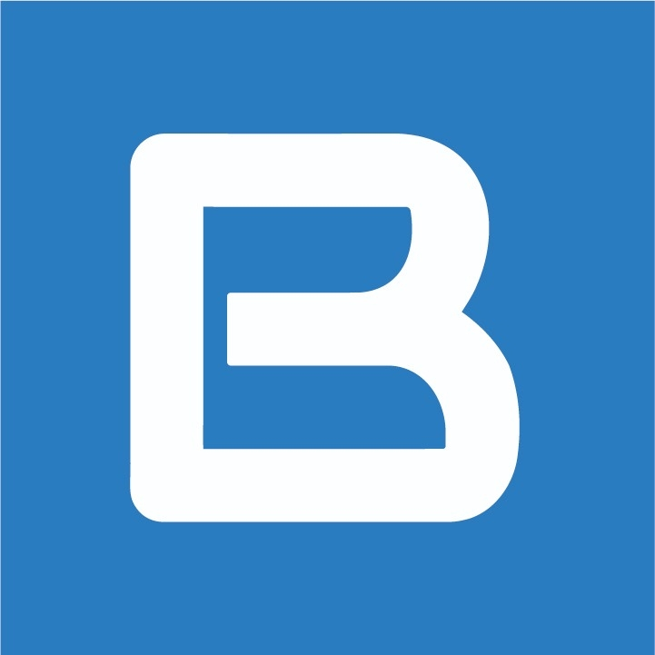

Conecta Odoo con sistemas de IA. Expone metadatos de aplicaciones y modelos (tablas, campos) para que la IA pueda leer y consumir el esquema de datos de Odoo de forma estructurada.
Precio sugerido para tienda Odoo: Gratis
(O cambiar por ej. $29 USD al publicar)
Habilitar la conexión y lectura de información entre Odoo e IA. Expone el esquema de datos (modelos, tablas, campos) para que sistemas de IA puedan consumirlo, integrarse vía API, RAG o asistentes inteligentes.
Expone metadatos de Odoo (modelos, tablas, campos) para que sistemas de IA puedan conectarse y leer el esquema de datos.
Estructura lista para consumo por IA: RAG, embeddings, asistentes inteligentes y APIs que necesiten conocer el modelo de Odoo.
Por cada aplicación: modelos, tablas y campos. Ideal para generar documentación automática o contextos para LLMs.
Acceso al catálogo de aplicaciones y modelos.
Control completo sobre el módulo.
base, web, bo_license_clientbo_ia_mp a addons_pathNota: Al instalar se ejecuta un hook que carga los modelos de todos los módulos instalados.
Web: boffice.cloud